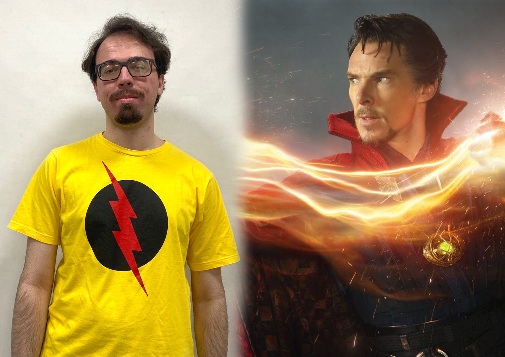
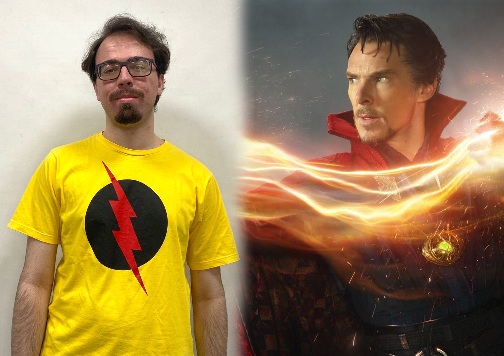
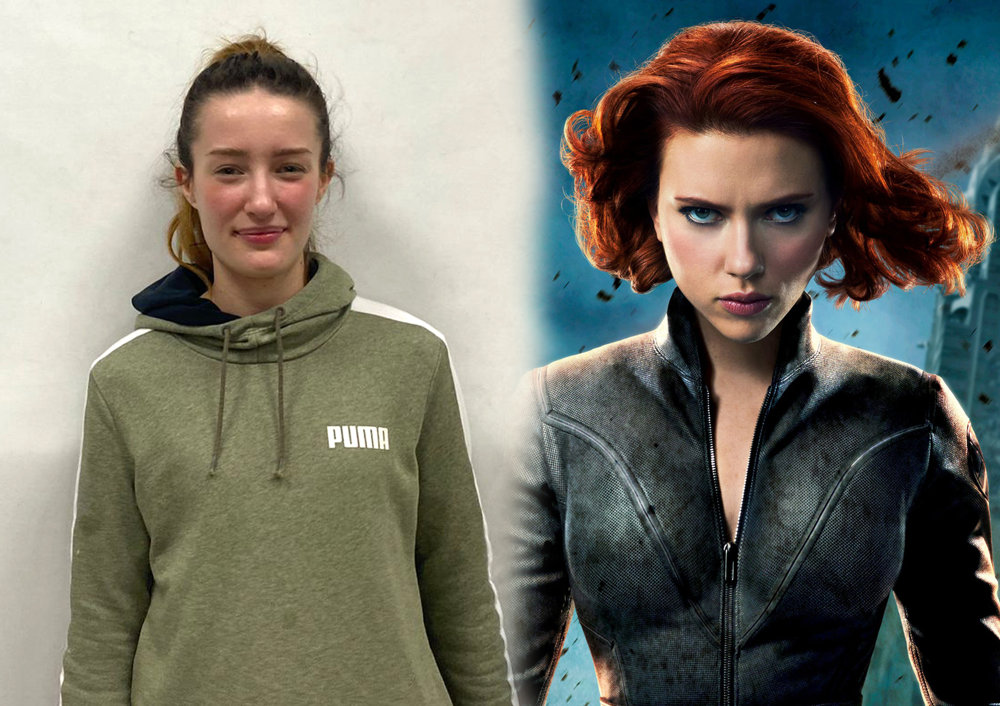
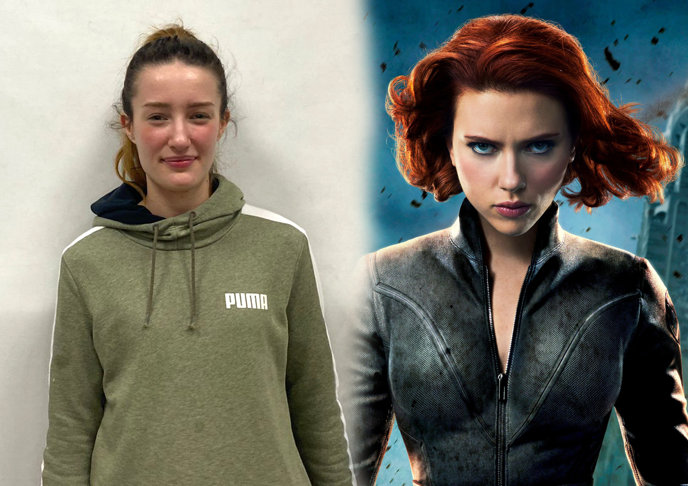
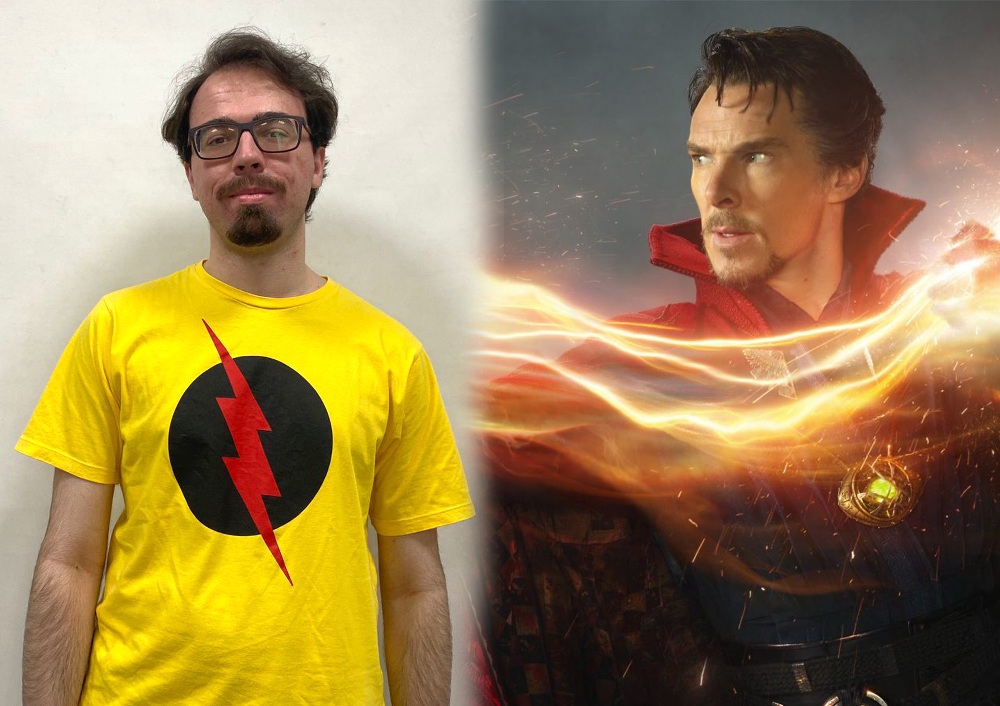
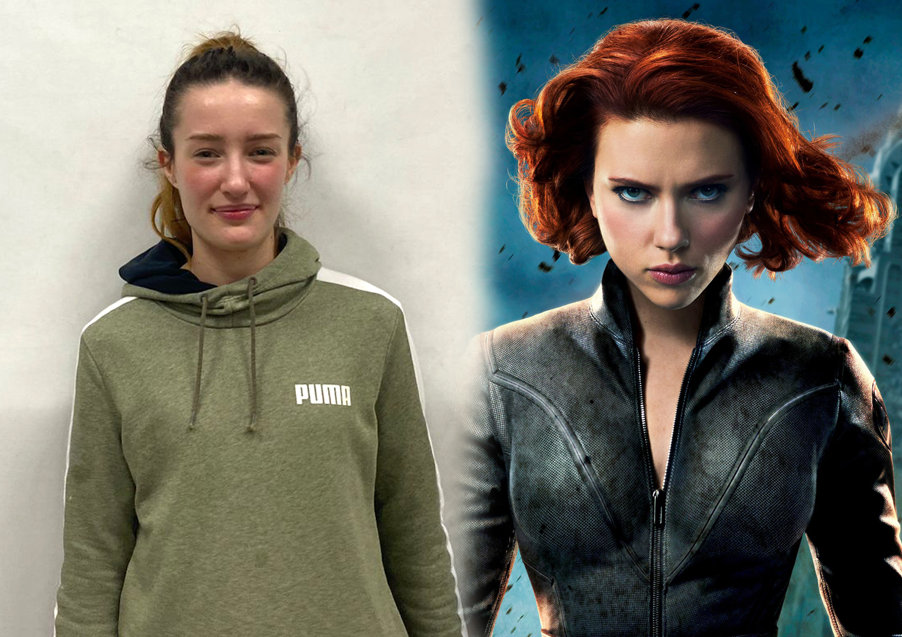
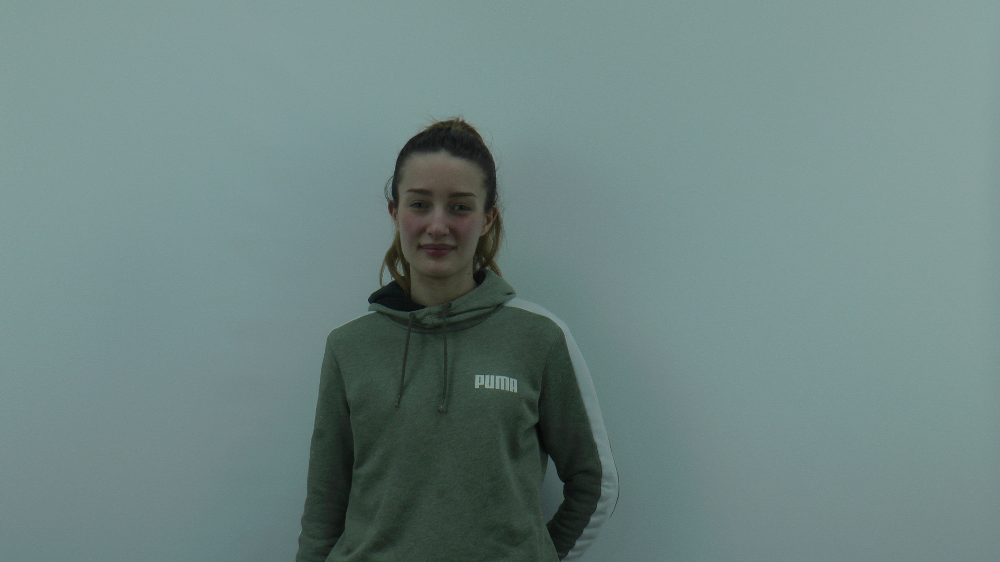
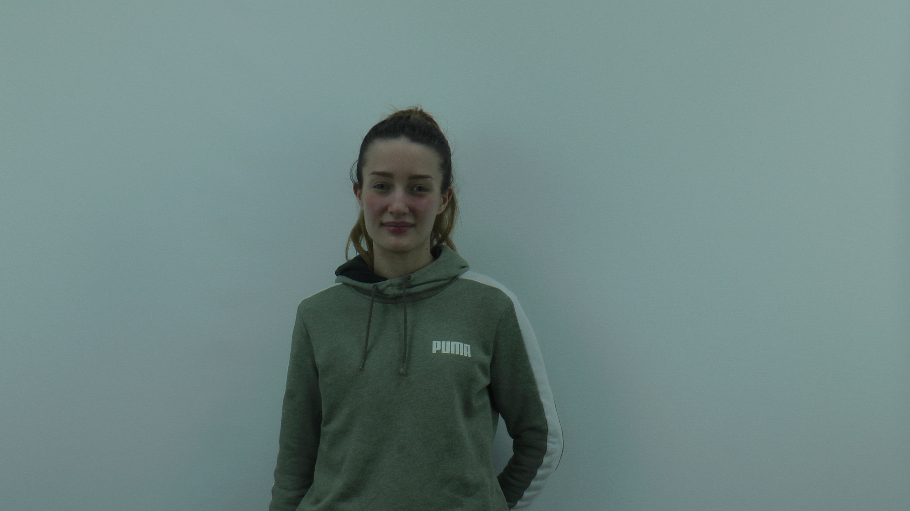

Fotos combinadas
Essas fotos foram tiradas com o celular e a montagem foi feita pelo photoshop
 

 


Esse vídeo foi gravado na câmera profissional
Essas fotos foram tiradas com o celular e a montagem foi feita pelo photoshop


Essa foto foi tirada com uma camera profissional e o preto e branco foi gerado diretamente via css
.black-white {
-webkit-filter: grayscale(100%);
filter: grayscale(100%);
}


Essas fotos foram tiradas com uma camera profissional e o preto e branco foi gerado diretamente via css
.black-white {
-webkit-filter: grayscale(100%);
filter: grayscale(100%);
}

 



Essas fotos foram tiradas com o celular e o preto e branco foi feito pelo photoshop


Essa foto foi tirada com uma camera profissional e qualidade foi reduzida posteriormente

Essa foto foi tirada com uma camera profissional e qualidade foi reduzida posteriormente

Vídeo Lento
Comando Utilizado:
ffmpeg -i video-lento.mp4 -vf "scale=iw/2:ih/2" output2.mp4
Vídeo Rápido
Comando Utilizado:
ffmpeg -i video-rapido.mp4 -vf "scale=iw/4:ih/4" output4.mp4